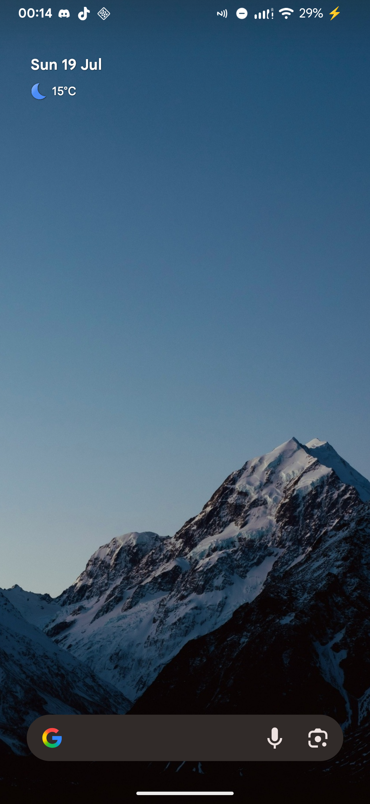
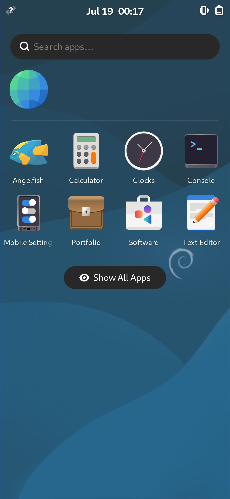

02 / EVIDENCE
It boots.
It returns.
The claims below are dated, captured, and running on the device. No concept renders required.
STATUS
DETERMINED
DETERMINED
JUL 01 → JUL 18
ACROSS THE STACK
+ DOCUMENTATION
NATIVE PATH


01 SAME PANEL
Two worlds.
One device.
Android 16 and a Debian arm64 Wayland desktop, captured tonight from the same physical OnePlus 7 panel. The mode changed. The hardware did not.
CAPTURED ON DEVICE / 19 JUL 2026BOOT
Custom kernel alive.
4.14.357 running, namespaces confirmed, Wi-Fi restored with matching modules.
GRAPHICS
GLES 3.2 on panel.
libhybris clears the TLS wall and reaches the vendor composer.
HANDOFF
Round trip complete.
Companion app enters desktop. Guest exits. Android returns without a cable.
NATIVE KMS
Plasma, GPU, touch.
KWin on raw KMS with Turnip, Zink, minigbm, and working input.